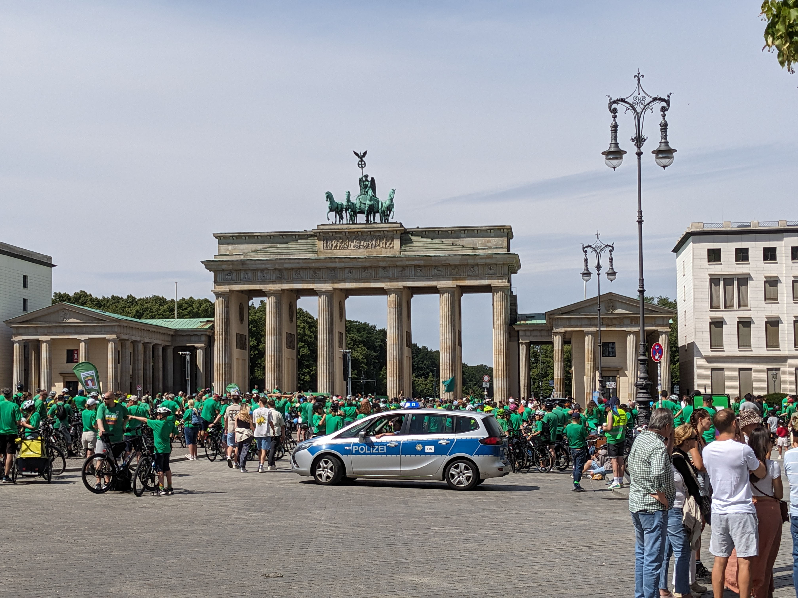
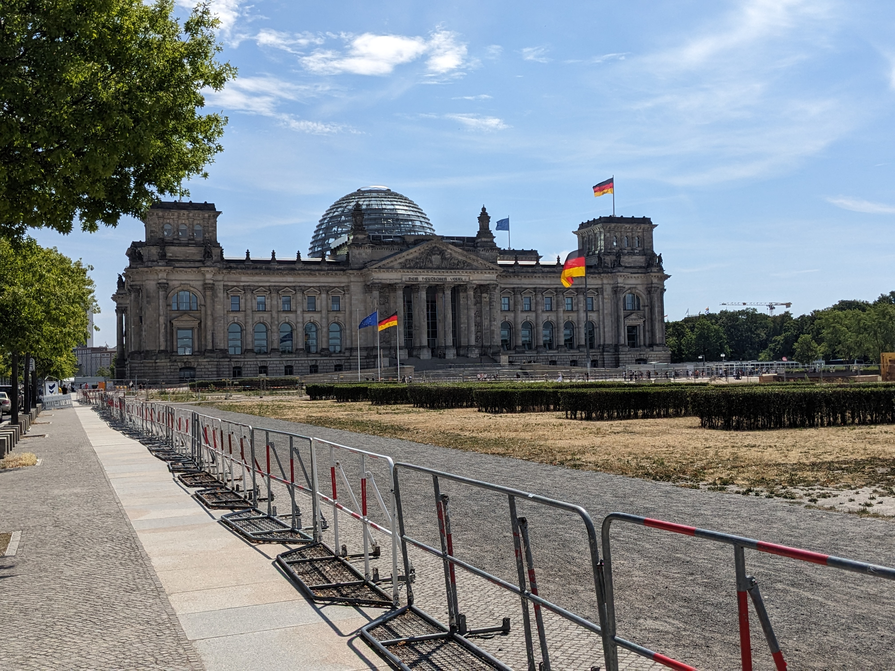
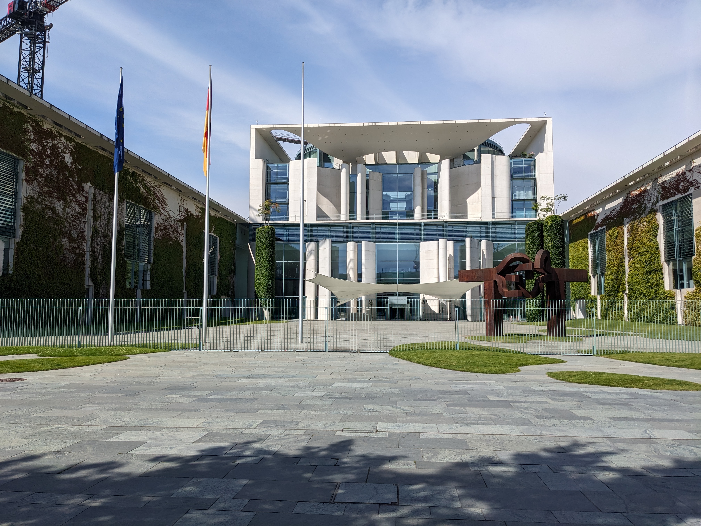

Brandenburg Gate
A neoclassical monument that has stood through the city's history.

Reichstag Building
The Reichstag building in Berlin featuring its historic stone façade and modern glass dome

Bellevue Palace in Berlin
Bellevue Palace in Berlin, a neoclassical white building with a central pediment and manicured lawns in front

Haus der Kulturen der Welt
Haus der Kulturen der Welt in Berlin, with its distinctive curved roof

German Chancellery (Kanzleramt)
The German Chancellery (Kanzleramt) in Berlin, a modern government building with glass façades and distinctive architectural design, seen from the front.

Kaiser Wilhelm Memorial Church in Berlin
The Kaiser Wilhelm Memorial Church in Berlin, showing the damaged spire of the original structure alongside the modern bell tower.